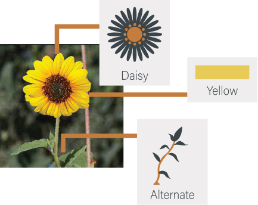
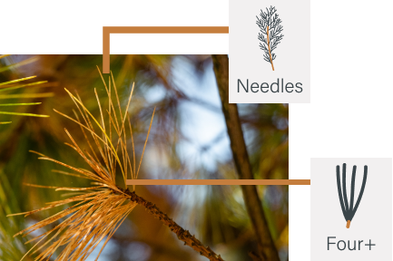

Cedar Breaks National Monument-Flowers App
Find more details on the large variety of wildflowers.
Sort by:

Cedar Breaks
National Monument
Wildflowers
NATIONAL PARK SERVICE
NATIONAL PARK SERVICE
Cedar Breaks
National Monument
Wildflowers
A
Common Name: {{selectedFlowerCommon}}
Latin Name: {{selectedFlowerLatin}}
Family Name: {{selectedFlowerFamily}}
Number of Petals: {{selectedFlowerPetals}}
Size: {{selectedFlowerSize}}
Leaf Arrangement: {{selectedFlowerLeaves}}
Blooming Months: {{selectedFlowerBloomingMonths}}
Physical Description: {{selectedFlowerDescription}}
General Info: {{selectedFlowerInfo}}
A
After locating a plant specimen you would like to use the app to identify, go to the respective tab (wildflower or tree) at the bottom of the screen. Go to the “Search Classifications
For Wildflowers
Select the trait that most represents the plant that you are looking at. If you leave a section blank, that section will not be used when filtering the search results. For example, if you would like to see only the yellow wildflowers, select the ‘yellow’ tab and leave all other sections blank.
Wildflower Example
For Trees
Select the trait that most represents the tree that you are looking at. If you leave a section blank, that section will not be used when filtering the search results. For example, if you would like to see only the trees with needles, select the ‘needles’ tab and leave all other sections blank.
Tree Example
{{item.name | to-uppercase}}
{{item.description}}
Cedar Breaks National Monument-Flowers App
Find more details on the large variety of wildflowers.
Cedar Breaks National Monument Instagram
Explore photos found in Cedar Breaks via Instagram.
Do I need to make a selection for all criteria when searching?
No. Just a single criteria may be used, though selecting more will narrow down your search faster.
What if the features vary from plant to plant?
Use the most commonly occurring feature in a population. For example, if some flowers are red, but more are orange, use “orange” as the search option.
What if the features vary on a plant?
Use the most commonly occuring feature. For example, if most leaves are alternate, but a few are opposite, use “alternate” as the search option.
What if there is more than one color on the flowers?
Select the color that occupies the most area.
How many plants Are in This App? How many are in Cedar Breaks National Monument?
In this first version of the app there are 44 wildflowers and...
How were the plants chosen for this app?
The likelihood of visitors encountering the species and the potential interest in that species were taken into account.
Will this app work in areas outside of Cedar Breaks?
Yes, but with limitations, as the focus of the app is Cedar Breaks. The distribution of many of the plants found in Cedar Breaks extend throughout southern Utah and beyond. However, some of the plants common at higher or lower elevations in the surrounding areas may not be found at Zion and therefore are not included in this app.
Every summer Cedar Breaks exhibits a spectacular display of wildflowers. Early bloomers such as cushion phlox, kittentails, and aspen bluebells emerge in late June. The wildflower variety and display then peaks in mid-July as countless other wildflowers bloom: scarlet paintbrushes, Colorado columbines, little sunflowers, elkweeds, and many more fill the forests and meadows with color. Later in the summer carpets of yellow showy goldeneye and purple Oregon fleabane pop-up for a final show of color, ushering in Autumn and the changing of the leaves.
Not all plant species found in the park could be included in this app. Plant species were chosen for this app based on the likelihood of visitors encountering the species, the potential interest in that species, and the ease of field identification. Although many of the tree species found in the park aren’t truly “flowering” plants, they are included in a separate tree section of the app due to visitor interest in them.